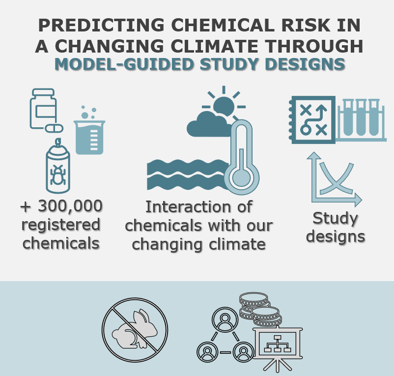
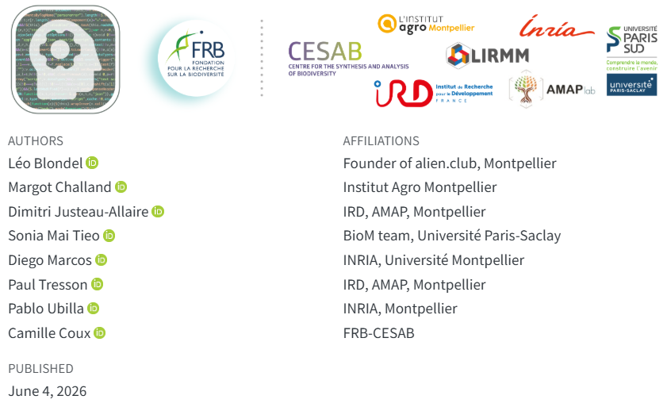

Epistemology, Foundations & Applied Machine Learning in Ecotoxicology
Restitution of the FRB-CESAB ‘AI for Ecologists: A Toolkit’ Training — FR BioEEnViS
LBBE – UCB Lyon 1 (UMR CNRS 5558) | Ecotox – UR RiverLy (INRAE)
December 16, 2026
PhD Motivation: Bridging the Methodological Gap

The External Training Resource

Local Acknowledgment (independent of the BioEEnViS mobility grant): Prior to Montpellier, attending AI4BioMed in Lyon, mainly organized and promoted by LBBE members, introduced key terminology that made the CESAB transition much smoother.
Four core modules covered during the 5-day FRB-CESAB program:
Module 1
Introduction to AI, History & Machine Learning Foundations
Module 2
Introduction to Deep Learning & Neural Architectures
Module 3
Applied Deep Learning
(Species Distribution Models & LLMs)
Module 4
Symbolic AI & Constraint-Based Reasoning
All four modules converge on a single pedagogical objective:
Official Course Objective — ai-ecol.github.io
“Give participants the autonomy to assess which algorithms are most adapted to their own research questions, where to find them, and how to adjust them to the desired question.”
Autonomy to assess which algorithms fit your research question (ai-ecol.github.io) \(\rightarrow\) Translated into 4 Core Insights (Today’s Roadmap)
Insight 1 · AI > Generative Chatbots
Covered next: Distinguish GenAI from the wider AI taxonomy (ML, DL, Symbolic AI) and assess its epistemic & ecological costs.
Insight 2 · Domain Baseline Primes
Covered in Section 2: Ecological and statistical knowledge anchors plausibility and dictates how a problem is framed.
Insight 3 · Exhaust Traditional Methods
Covered in Section 2: Verify dimensionality and exhaust classical statistical analyses before adopting complex ML.
Insight 4 · Explicit Trade-Offs
Covered in Section 3: Balance predictive gain against explainability based on the scientific goal.
Note: Part 1 is a curated synthesis of CESAB Day 1 principles—not a full 5-day syllabus dump. Part 2 (10:45) shows how these insights landed in my PhD.
As a scientist trained to look for mechanistic explanations, why invest in learning opaque algorithms?
Biological Signal Integration (Human Learning)
[IMAGE: Biological Neuron / Synaptic Integration]
Save file as: assets/images/bio_neuron.png
Artificial Neuron (Perceptron, 1957)
Inputs \(\rightarrow\) Weights \(\rightarrow\) Weighted Sum \(\rightarrow\) Activation \(\rightarrow\) Output.[IMAGE: Perceptron Diagram (CESAB Day 1 Slide 70)]
Save file as: assets/images/artificial_perceptron.png
The Paradox: AI delivers major scientific breakthroughs (e.g., AlphaFold), yet our most frequent daily contact is with Generative AI chatbots. When misused to bypass writing, literature synthesis, or coding, a bio-inspired tool short-circuits our own biological learning process.
Material & Ecological Footprint
[IMAGE: IFC 2026 Data Centers Map — Uruguay 1.77]
Save file as: assets/images/datacenters_uruguay_ifc2026.png
“Only a tiny proportion of water in Uruguay is used for human consumption.” — Daniel Pena (Rest of World, 2026)
Stiegler (2010) For a New Critique of Political Economy · Messeri & Crockett (2024) Nature 10.1038/s41586-024-07146-0 · Barcaui (2025) SSH Open 10.1016/j.ssaho.2025.102287 · Kim et al. (2025) Consum. Psychol. Rev. 10.1002/arcp.70008 · Liu et al. (2026) arXiv:2604.04721 · Alpine et al. (2026) npj Clim. Action 10.1038/s44168-026-00411-0
Insight 1b — Moving beyond chatbots to map the algorithmic toolkit
Quick Poll (Slido 2): Which of these four diagrams correctly organizes Artificial Intelligence?
A. Nested Algorithms
assets/images/taxo_1_nested_algorithms.png
B. AI / ML / DL / NLP / LLM
assets/images/taxo_2_venn_nlp_llm.png
C. AI / Data Science / Big Data
assets/images/taxo_3_venn_bigdata.png
D. CS / AI / Data Science / Math
assets/images/taxo_4_venn_cs_stats.png
[QR CODE: Slido 2 — Multiple Choice]
assets/images/slido_2_taxonomy_qr.png
Code: #[SLIDO_2_CODE]
Answer: All four are partial lenses.
There is no single formal definition of AI—each diagram highlights a different disciplinary cut (algorithms, language, data, or math).
In practice, researchers encounter a scattered soup of overlapping terms and tools:
Linear & Logistic Regression ChatGPT / Claude / Perplexity Symbolic Logic & Rules PCA / UMAP CNN & RNN Data Science & Statistics Random Forest & Decision Trees Intelligent Robots Neural Networks (MLP) Support Vector Machines (SVM) Knowledge Representation
Which field contains which—and where do everyday chatbots actually sit?
Organizing the umbrella into parallel domains and nested subsets:
ARTIFICIAL INTELLIGENCE (Umbrella Discipline)
Symbolic Logic & Rules Knowledge Representation Intelligent Robots
Explicit rules, ontologies, and constraint solving (e.g., protected-area design in CESAB Day 5).
Overlapping Quantitative Pillar Data Science & Statistics
Linear & Logistic Regression PCA / UMAP Support Vector Machines (SVM) Random Forest & Decision Trees
Neural Networks (MLP) CNN & RNN
GENERATIVE AI & LLMs (A small, highly visible subset) ChatGPT / Claude / Perplexity
Standard reference taxonomy: The OECD Framework for the Classification of AI Systems classifies systems by model type (symbolic, statistical, or hybrid), learning paradigm, and transparency.
Insights 2 & 3 — Domain baseline, dimensionality, and exhausting traditional methods
Scenario: An environmental scientist monitors 100 river sites across chemical concentrations, water quality, climate, and community traits.
What Is a “Dimension”?
The Curse of High Dimensionality
In a unit hypercube with \(n=100\) samples, the edge length \(l = (k/n)^{1/d}\) needed to capture even \(k=1\) neighbor grows rapidly:
| Dimensions (\(d\)) | 2 | 3 | 10 | 100 |
|---|---|---|---|---|
| Cube edge (\(l\)) | 0.10 | 0.21 | 0.63 | 0.955 |
Distance flattens; almost every observation lies near the “border.”
[IMAGE: CESAB Day 1 — Hypercube Distance & 3D-to-2D Manifold]
Save file as: assets/images/curse_dim_cube_manifold.png
The Methodological Filter
Following the same environmental dataset from classical statistics into the ML toolkit:
1. Classical Baseline
One predictor, linear trend:
\(Y = ax + b + \varepsilon\)
Solved analytically via Ordinary Least Squares.
2. Same Problem as ML
Any ML workflow = 3 parts:
3. Earned Complexity
Add non-linear thresholds, categories, or high-\(d\) features:
Move deliberately along the toolkit \(\rightarrow\) Classification (Cross-Entropy), Random Forests, SVMs, or Neural Nets.
| Classical Statistics Dictionary | Machine Learning Dictionary | Scientific Note |
|---|---|---|
| Covariates / Explanatory variables (\(X\)) | Features / Inputs | Domain knowledge guides selection |
| Response variable (\(Y\)) & Residuals | Target / Label & Loss Function | Defines what is optimized |
| Mechanistic / Biological parameters | Weights / Hyperparameters | Often have no biological meaning |
Check before scaling up:
Exhaust classical exploratory data analysis first. Complex algorithms are justified only when data shape and dimensionality demand them.
In Slido 3 (#[SLIDO_3_CODE]), write a short 1-line formulation:
[QR CODE: Slido 3 — Open Text (\(Y \sim X\))]
Save file as:assets/images/slido_3_research_qr.png
(Switch browser tab to Slido Present Mode to discuss live examples)
Insight 4 — Balancing predictive performance and explainability
Data Modeling Culture (Classical Statistics)
Algorithmic Modeling Culture (Machine Learning)
High Interpretability
Linear / Mechanistic (GUTS) ← Hybrid & Explainable AI (XAI) →
Decision Trees · Random Forests + Feature Importance High Predictive Capacity
Deep Neural Networks
A Pragmatic, Objective-Driven Choice: Interpretability is not a dogma—it is an explicit scientific decision. High-throughput screening (e.g., QSARs) may justify prioritizing accuracy; regulatory or mechanistic risk assessment demands explainability. Increasingly, hybrid pipelines combine both.
Breiman, L. (2001). Statistical modeling: The two cultures. Statistical Science, 16(3), 199–231. 10.1214/ss/1009213726 · Rudin, C. (2019). Stop explaining black box machine learning models for high stakes decisions and use interpretable models instead. Nature Machine Intelligence, 1, 206–215. 10.1038/s42256-019-0048-x
Revisit Slide 2: Our Opening Word Cloud
[LIVE CALLBACK: Switch to Slido 1 Word Cloud tab]
(Post-event: final exported word cloud will be archived on the workshop website)
How These 4 Insights Reshaped My PhD (Preview of Part 2 — Today at 10:45)
Next up today (after a 15-min break): 10:45 – 11:45 | Part 2 — Technical Case Study (Applied ML & GUTS experimental designs).
[QR CODE: FRB-CESAB Course]
ai-ecol.github.io
assets/images/qr_cesab_course.png
[QR CODE: Workshop Site & Contact]
assets/images/qr_workshop_contact.png
Thank you — Questions?
Anthony Fow Esteves · anthony.fow@univ-lyon1.fr
assets/images/LBBE_LOGO_color.png
assets/images/INRAE_LOGO_color.png
assets/images/BIOEENVIS_LOGO.png
Built with Quarto · Supported by FR BioEEnViS